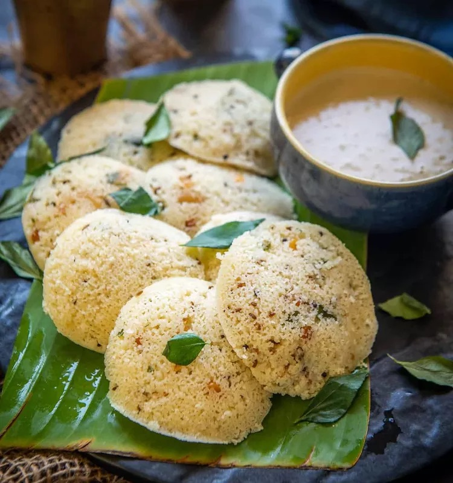

Idli

Description
Idli is a popular South Indian dish made from a fermented batter of rice and urad dal (black gram).
These soft, fluffy cakes are traditionally steamed and served hot, often accompanied by chutneys,
sambar, or other side dishes. Idlis are known for their light texture and subtle, slightly tangy flavor,
making them a staple breakfast item in many South Indian households. They are also favored for their
nutritional benefits, being low in fat and high in protein, carbohydrates, and vitamins, making them a delicious, while
balanced meal option.
Ingredients
- 2 tablespoons vegetable oil
- 1/2 teaspoon mustard seeds
- 1/2 teaspoon cumin seeds
- 1 teaspoon split chana dal
- 10 curry leaves
- 1 dried, crushed red chile pepper
- 1 tablespoon crushed cashews
- 1 teaspoon minced fresh ginger root
- 1 teaspoon diced green chile pepper
- 1/4 teaspoon asafoetida powder
- 1 cup semolina
- 1/2 cup yogurt
- 2 tablespoons chopped carrots
Directions
- Add vegetable oil in a pan over medium-low heat
- Add mustard seeds, cumin seeds, and chana dal and saute for a few seconds.
- Add curry leaves, dried red chile, cashews, ginger, green chile peppers, and hing and saute until cashew nuts turn slightly brown (around 3 to 4 minutes)
- Add semolina and cook and stir over low heat until slightly browned
- Transfer mixture to a plate and let it cool completely (about 10 minutes)
- Add yogurt and carrot to the mixture and mix
- Cover mixture and let it sit for 15 minutes
- Grease an idli pan and add water to steam
- Pour the batter in the greased molds
- Steam the idli for 10 minutes
- Remove the idli from molds and serve